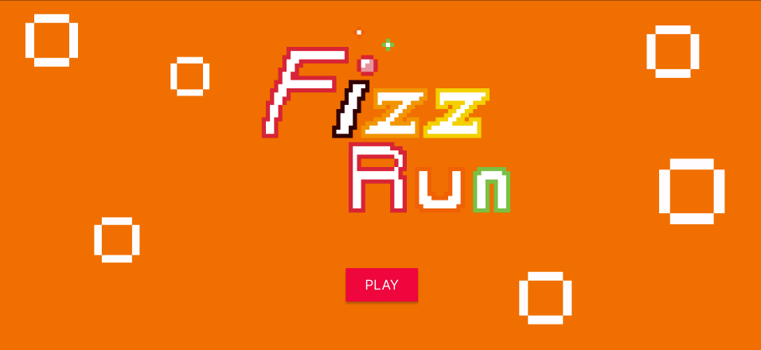
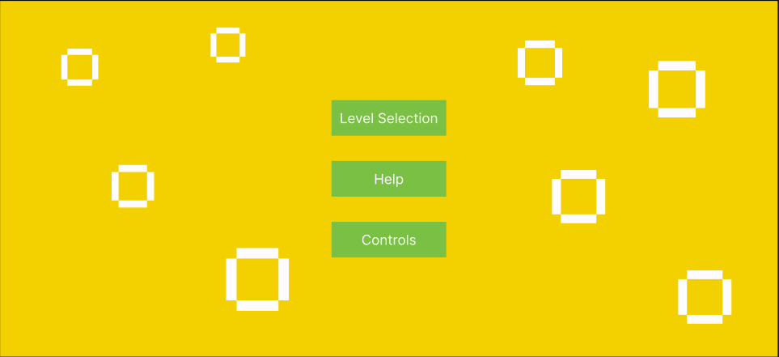
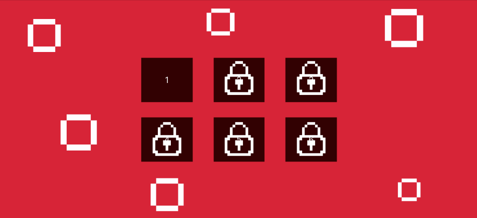
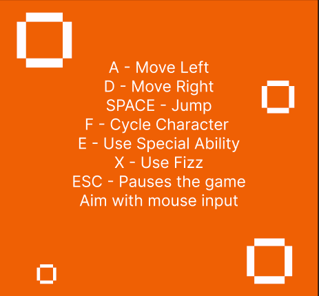
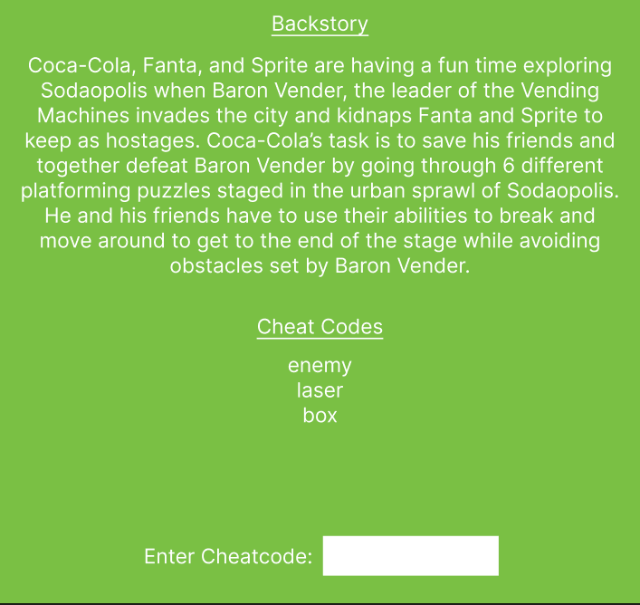
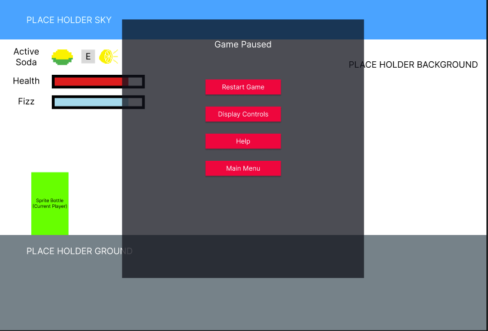

INTRODUCTION
This document describes a game called "Fizz Run", which is designed to be a simple, 2D side-scroller, puzzle game. The game will employ sprite-based animation, tiled backgrounds, collision detection, physics, AI, and side scrolling
TECHNOLOGY
Fizz Run will be developed for the Windows Platform using the Wolfie2D game engine, which is a bare-bones engine developed by Richard McKenna for rapidly prototyping 2D games. WebGL will be used as the underlying rendering technology. BeepBox and Chiptone will be used for all music and sound effects management. Artwork and assets will be made with Piskel.
BACK STORY
Coca-Cola, Fanta, and Sprite are having a fun time exploring Sodaopolis when Baron Vender, the leader of the Vending Machines invades the city and kidnaps Fanta and Sprite to keep as hostages.
OBJECTIVE
Coca-Cola’s task is to save his friends and defeat Baron Vender by going through 6 different platforming puzzles staged in the urban sprawl of Sodaopolis. He has to use his abilities to break and move blocks around to get to the end of the stage while avoiding obstacles set by Baron Vender.
In the first 4 levels you will save all of your friends, and as you save them it will allow you to switch them in said levels to help you solve the puzzles in new and interesting ways.
GAMEPLAY
The game will work like a side scroller, with Coca-Cola and friends being able to run left and right, and jump up or down onto platforms and other surfaces such that we may scroll up and down.
Coca-Cola and friends will all act similarly except for their unique skill that can be used by the player to complete each puzzle. The unique skills are the following:
- Coca-Cola: Throws a cola bomb that blinds enemies.
- Fanta: Can summon a healing bubble that also protects the sprite from projectiles
- Sprite: Shoots out lemon particles and deals slow acidic damage to enemies. Can also corrode cracked walls.
To change characters the player has to press the “F” key and they will be allowed to switch with no restriction.
There also exists powerups across each level such as:
- Mentos: Increases the fizz meter of the sprite. If full, a countdown will start before unleashing a giant explosion. This explosion breaks walls and one shots all enemies on screen
- Sugar: Increase the movement speed of the sprite for a certain amount of time.
- Ice: Can make the drink icy and freeze water when it walks over it. Also increases damage for a certain amount of time.
There exists multiple different types of obstacles and enemies that prevent the player from reaching the destination that the sprite must interact with or maneuver around:
- Water pools: Insta kills the player unless they have the Ice powerup
- Cracked walls
- Security guards
- Lasers
- Boxes
- Pressure Plates
The abilities of the characters affect these obstacles and enemies
CONTROLS
This game will be played using both a keyboard and mouse. Once started, use the following:
- A - Move Left
- D - Move Right
- LEFT-ARROW - Move Left (same as A)
- RIGHT-ARROW - Move Right (same as D)
- SPACE - Jump
- F Character selection. It will cycle between the characters as you press it.
- ESC - This pauses the game and presents a pop-up window to the player displaying buttons to resume or quitting back to the title screen.
GRAPHICAL USER INTERFACE
The GUI Elements
- Splash Screen - The splash screen GUI simply presents a game logo and a Start button for the user to press when they are ready to play. Upon pressing it, a brief scripted sequence is played explaining the backstory for the game. While playing the message "Press ESC to Skip'' should be displayed at the bottom of the screen. If pressed, the game should immediately start.
- Main Menu - This menu will have a select level button, a controls button, and a help button.
- Level Selection Screen - This screen will list all the levels playable in the game. However, the player can only play a level when they completed the prior one first. When the player first plays the game, only level 1 is unlocked and the 5 other levels are locked.
-
In-Game Menu - When a player is playing a
level, the ESC key can be pressed to pause the game. The
pause menu will have the following buttons:
- Restart game - If pressed, the current level will be restarted.
- Display Controls - If pressed, the game will display an info screen that includes a description of all game controls (keyboard and mouse).
- Help - If pressed, the game will display information about the game (like obstacle information) and the creators.
- Main Menu - If pressed, the level will be abandoned and the game will return to the main menu.
-
In-Game GUI - Once a level starts,
Coca-cola will be seen at the level spawn. As the sprite
moves around, the viewport will follow it. This may reveal
several obstacles and enemies that exist on the level map.
While playing the following will be displayed at all times:
- Health Remaining Bar
- Fizz Meter Bar
ARTWORK
All artwork in the game will be original. The following needs to be created:
-
Coca-Cola, Fanta, and Sprite - Each soda
will require animations for:
- Walking Right
- Walking Left
- Jumping Up
- Taking Damage
- Dying
- Using Main Ability
-
Obstacles - Simple sprites:
- Laser
- Box
-
Enemies - They can move or are stationary,
each require animations for:
- Attacking
- Moving
- Ceiling, Floor, & Wall Tiles - The 6 levels will delve into different parts of the city, ranging from a park, to sewers, to busy streets. We'll use simple tiles for all walkable/collidable surfaces. These tiles will have to clearly define where the walkable surface is. Breakable walls will use a different texture (most likely an overlay over an already existing texture).
SOUND EFFECTS
All sound effects will be original. Sounds must be made to coincide with each of the following events:
- Walking
- Jumping
- Dying
- Picking Up Powerups
- Using Abilities
- Enemies taking damage
- Enemies dying
- Laser beam ambient sound
- Box moving
MUSIC
Each of the 6 levels will have their own accompanying music track to differentiate them from each other. Level complete music will be played when the player finishes a level.
Splash Screen
Main Menu
Level Selection Screen
Controls Screen
Help Screen
In Game GUI

Web page created and maintained
by Rahul Sarker, Kevin Chen, and Alan Huang